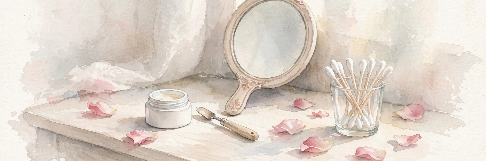

トップ ＞ スキンケア ＞ 目元・口元など顔のパーツ別スキンケアの量と順番
目元・口元など顔のパーツ別スキンケアの量と順番

施術で顔に触れていると、部位ごとに皮膚の厚みも動きも違うことがよく分かります。頬は広くて平らですが、目元や口元は、まばたきや会話で一日中よく動く場所です。顔全体を同じ量、同じ手順で進めると、こうした小さい部位はどうしても雑になりがちです。この記事では、パーツ別に量と順番を分けて考える方法を整理します。
量は、顔全体の単位とは別に決める
パーツ用のアイテムには、「米粒大」「小豆粒大」といった小さい単位の表示がよく使われます。顔全体に使う美容液の「パール粒大」とは、そもそも単位の大きさが違います。私はパーツケアをするとき、まず指先にほんの少量を取り、足りなければ継ぎ足す進め方にしています。一度に多く取ると、小さい範囲では伸ばしきれず、残った分が目や口に入りそうになって慌てるからです。
目元は左右で分けて取る、口元は上下で分ける、というように、取る回数自体を分けるのも、量をそろえる工夫です。
順番は、手順の最後に置く
パーツケアは、顔全体の手順の最後に置くのがおすすめです。全体のケアが終わった後に落ち着いて進めると、小さい部位にも意識が向きます。逆に、最初にパーツから始めると、後の手順で手が触れて、せっかく塗った分が移ってしまうことがあります。
時間のない朝は、パーツケアを夜に回す判断もありです。朝と夜で役割を分ける考え方は、このサイトの他の記事でも紹介している、無理なく続けるための基本です。
指は、力の入りにくい薬指を使う
施術の現場では、力加減を細かく調整したい場所では、力の入りにくい指を選びます。目元や口元まわりでは、薬指の腹を使うと、自然と優しい力加減になります。こするように伸ばすのではなく、置くように、軽く押さえるように進めるのがコツです。
顔全体は手のひら、小さい部位は指先。この使い分けが身につくと、手順全体の丁寧さが変わってきます。
もうひとつ、施術の現場で感じるのは、目元や口元は表情の動きが多い分、塗ったものが移りやすい場所だということです。朝の手順では、後のメイクや食事で触れる機会も考えて、量は控えめにしておく方が収まりがよくなります。逆に夜は、時間をかけて丁寧に進められるため、パーツケアの中心は夜に置く設計が向いています。左右で量の感覚がそろわないうちは、取る回数を左右で同じにするだけでも、仕上がりのばらつきは減っていきます。小さい部位ほど、回数と単位を決めることが、手順を安定させる近道です。
セラフィナ「パーツケアは最後に、量は指先に少しだけ。薬指の腹で置くように進めるのがコツだね」

セラフィナ｜美容の道具箱の案内役
「量と表示が分かれば、美容は失敗しない。」——セラフィナと白猫のモコが、買う前のチェックポイントを案内します。綺麗になりたい気持ちに正直に、でも表示は冷静に読むのが、このサイトの約束です。